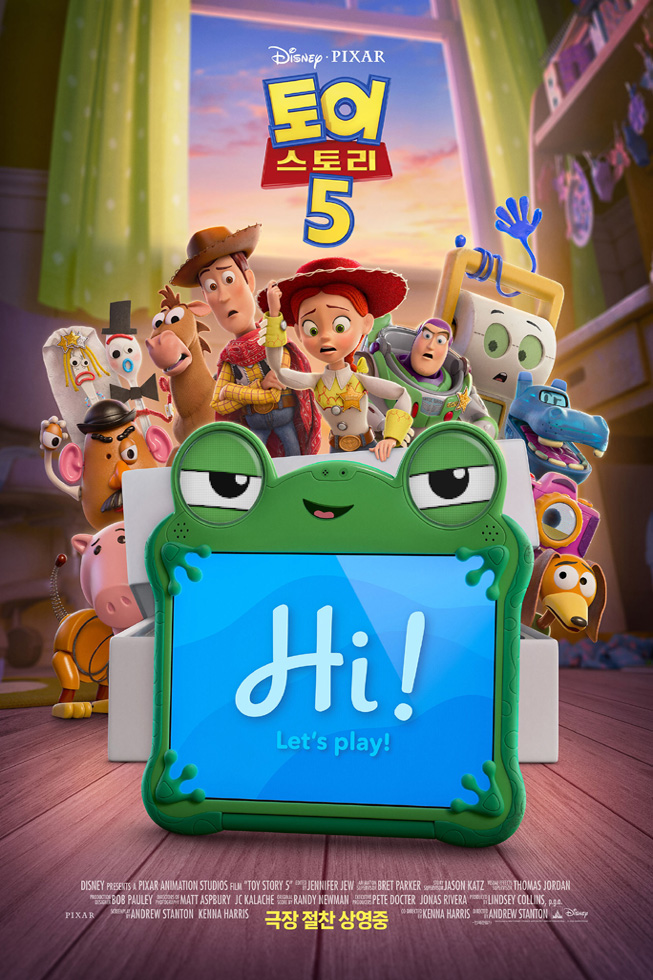
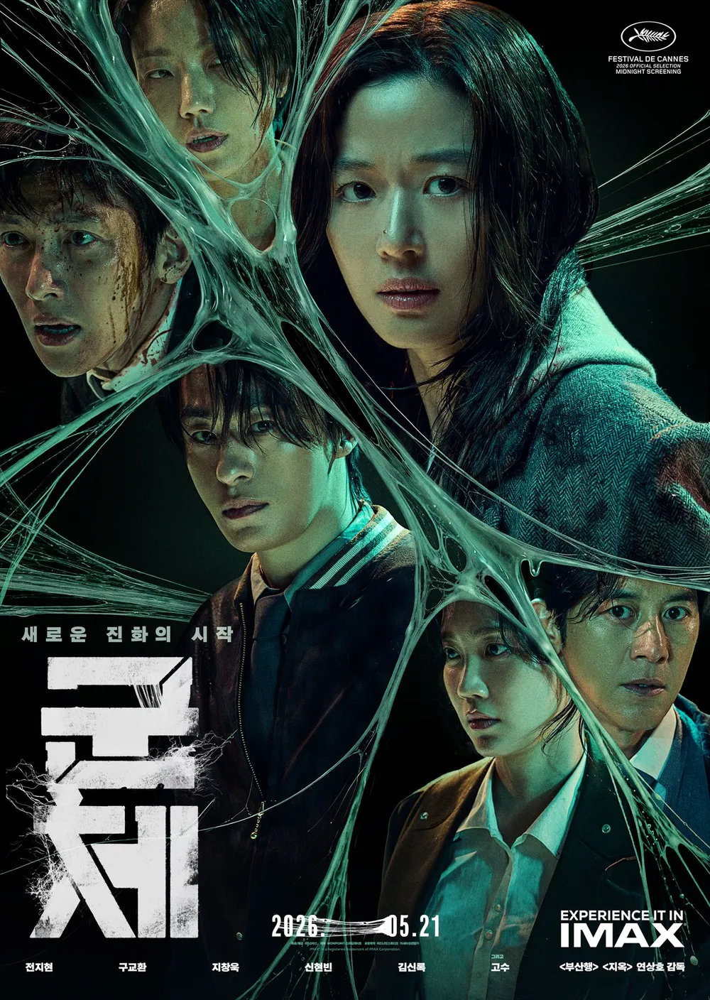
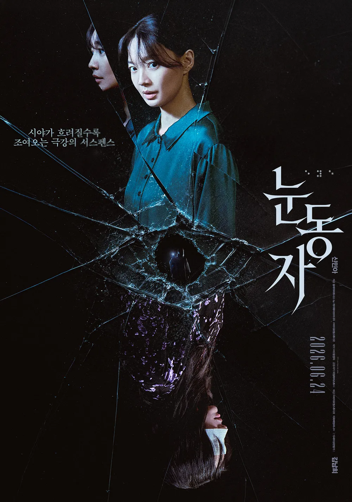

“시대는 변해도, 친구들은 영원하다"
스마트 태블릿 ’릴리패드'의 등장으로 온라인 세계에 모여들게 된 아이들. 친구들과 어울리기 위해 ‘보니’에게도 ‘릴리패드’가 생기게 되고, 장난감들은 점점 일상에서 밀려나게 된다. '제시'는 이 위기를 해결하기 위해 자신만의 길을 떠났던 '우디'에게 도움을 요청하게 되는데… 다시 뭉친 '제시', '우디', '버즈'는 '보니'의 마음을 되돌리고 ‘보니’의 진정한 친구를 찾아줄 수 있을까?
"장난감 VS 전자기기! 새로운 세상 속, 멈춰있던 장난감들이 다시 움직이기 시작한다!"
3.8 평균 별점(4,625명)

3.0 평균 별점(4.8만명)

개봉 D-5